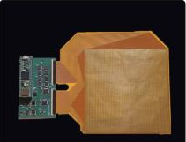
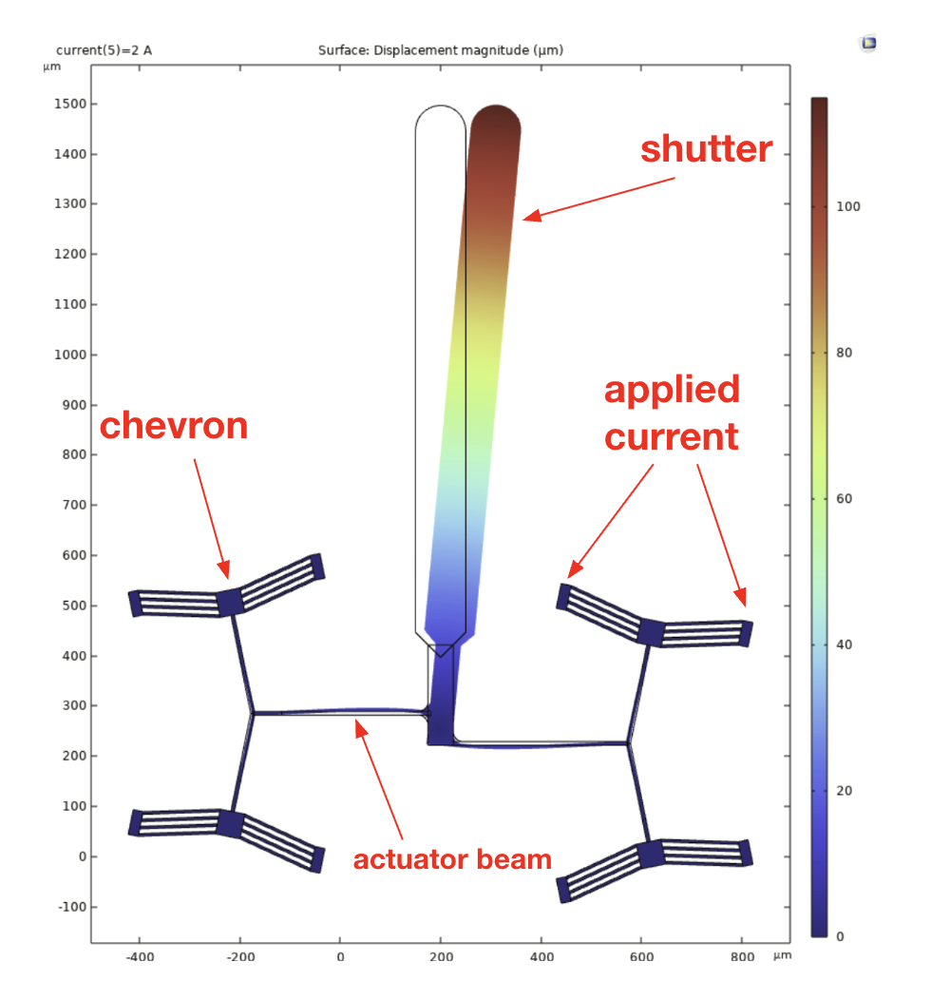

TactileArena: the ground as a sensor
A scalable, high-density tactile arena that turns the floor into a 16,384-taxel pressure sensor, measuring ground-contact forces of freely moving animals at ~1 kHz alongside synchronized video. Used to quantify gait load-sharing deficits after peripheral nerve injury in a rodent model.
Read more
Near Infrared Vein Imager
An FPGA-based infrared vein imaging system implemented entirely in VHDL, capturing near-infrared images of subcutaneous veins and performing real-time image processing on an FPGA board to enhance vein visibility.
Read more
Thermally Actuated Optical Shutter
A MEMS laser shutter with a tunable operating frequency to reduce thermal damage in laser cutting and engraving, using a microcontroller-operated, voltage-controlled ring oscillator for precise switching.
Read moreAn 8-bit RISC Processor
A complete RISC processor design in Verilog capable of fundamental arithmetic operations, covering the full workflow from RTL coding to final gate-level layout.
Read report
Real-time Tracking for Medical Suturing
A real-time tracking system combining computer vision and sensor fusion to analyze suturing needle and thread motion, comparing UNet, nnUNet, and Attention-UNet segmentation architectures for surgical assistance.
Read more
Mussel-inspired Bioadhesive
An investigation into whether dopamine can enhance the adhesiveness of GelMA hydrogel, inspired by mussel byssal threads, aiming to develop a bioadhesive that could one day replace surgical sutures.
Read more